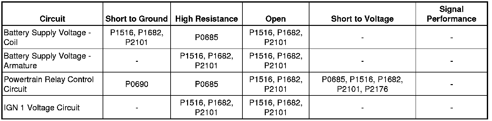
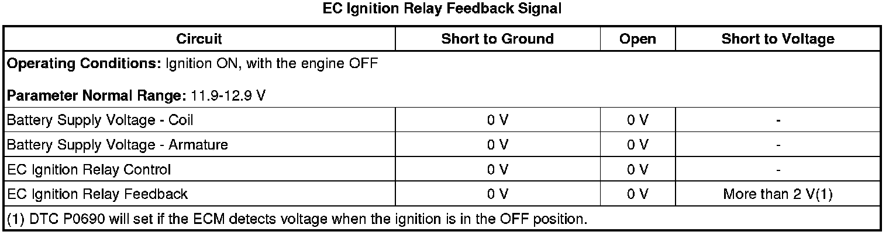

P0690
DTC P0685 or P0690
Diagnostic Instructions
* Perform the Diagnostic System Check - Vehicle (Initial Inspection and Diagnostic Overview) prior to using this diagnostic procedure.
* Review Strategy Based Diagnosis (Initial Inspection and Diagnostic Overview) for an overview of the diagnostic approach.
* Diagnostic Procedure Instructions (Initial Inspection and Diagnostic Overview) provides an overview of each diagnostic category.
DTC Descriptors
DTC P0685
- Engine Controls Ignition Relay Control Circuit
DTC P0690
- Engine Controls Ignition Relay Feedback Circuit High Voltage
Diagnostic Fault Information

Typical Scan Tool Data

Circuit/System Description
The powertrain relay is a normally open relay. The relay switch is held in the open position by spring tension. Battery positive voltage is supplied directly to the relay coil and the relay switch contact at all times. The engine control module (ECM) supplies the ground path to the relay coil control circuit through an output driver module (ODM). The ODM for the powertrain relay also incorporates a fault detection circuit, which is continuously monitored by the ECM. When the ECM commands the powertrain relay ON, ignition 1 voltage is supplied to fuses in the underhood fuse block.
The ignition 1 voltage that is supplied to the ECM, provides power to the internal ECM circuits associated with the throttle actuator control (TAC) operation. The ECM also monitors the voltage level on the ignition 1 voltage circuit to confirm that the powertrain relay contacts have closed.
Conditions for Running the DTC
P0685
* The battery voltage is between 9-18 volts.
* The ignition is ON.
* The powertrain relay has been commanded ON.
P0690
* The battery voltage is between 9-16 volts.
* The ignition is OFF.
* The powertrain relay has been commanded OFF.
Conditions for Setting the DTC
P0685
* The commanded state of the ODM does not match and the actual state of the control circuit.
* The condition is present for more than 5 seconds.
P0690
* The ECM detects more than 2 volts on the ignition 1 voltage circuit to the ECM.
* The condition is present for more than 2 seconds.
Action Taken When the DTC Sets
DTCs P0685 and P0690 are Type A DTCs.
Conditions for Clearing the DTC
DTCs P0685 and P0690 are Type A DTCs.
Diagnostic Aids
* This test procedure assumes that the vehicle battery has passed a load test and is completely charged. Refer to Battery Inspection/Test (Battery Inspection/Test) .
* When disconnecting electrical connectors or removing fuses and relays from a fuse block, always inspect the component electrical terminals for corrosion and the mating electrical terminals for correct tension.
Reference Information
Schematic Reference
* Engine Controls Schematics (Electrical Diagrams)
* Power Distribution Schematics (Power Distribution Diagrams)
Connector End View Reference
Component Connector End Views (Connector Views)
Electrical Information Reference
* Circuit Testing (Component Tests and General Diagnostics)
* Connector Repairs (Component Tests and General Diagnostics)
* Testing for Intermittent Conditions and Poor Connections (Component Tests and General Diagnostics)
* Wiring Repairs (Component Tests and General Diagnostics)
* Heated Oxygen Sensor Wiring Repairs (Component Tests and General Diagnostics)
DTC Type Reference
Powertrain Diagnostic Trouble Code (DTC) Type Definitions (Diagnostic Trouble Code Descriptions)
Scan Tool Reference
Control Module References (Programming and Relearning) for scan tool information
Special Tools Required
J 43244 Relay Puller Pliers
Circuit/System Verification
1. With the ignition ON, engine OFF, command the engine control ignition relay ON and OFF several times using the scan tool output control function. You should either hear or feel the relay click with each command.
2. With the ignition ON, engine OFF, probe both test points of each of the fuses supplied with voltage by the powertrain relay.
• The test lamp should illuminate on at least one test point of each fuse. If the test lamp does not illuminate continue with Circuit/System Testing.
Circuit/System Testing
1. With the ignition OFF, remove the powertrain relay from the underhood fuse block.
2. With the ignition ON, measure for battery positive voltage, B+, between the battery supply voltage coil circuit terminal R52 and ground.
• If the voltage measures less than B+, repair the open or high resistance in the circuit to the relay coil. All wire circuit resistance should measure less than 2 ohms.
3. Measure for voltage between the powertrain relay control circuit terminal R53 and ground.
• If voltage is measured on the control circuit of the relay, test for a short to voltage.
4. Connect a test lamp between the battery supply voltage coil terminal R52 and the powertrain relay control circuit terminal R53. Use a scan tool to command the powertrain relay ON and OFF using the Engine Controls Ignition Relay selection. The test lamp should turn ON and OFF when toggling between the commanded states.
• If the test lamp stays ON all the time, test for a short to ground on the powertrain relay control circuit or a faulty ECM.
• If the test lamp stays OFF all the time, test for an open or high resistance on the powertrain relay control circuit or a faulty ECM. All wire circuit resistance should measure less than 2 ohms.
5. Measure for B+ between the relay battery supply voltage switch circuit terminal R54, and ground.
• If the voltage measures less than B+, repair the open or high resistance in the circuit to the relay armature. All wire circuit resistance should measure less than 2 ohms.
6. With the ignition ON, test for voltage on each test point of the ECM 1 fuse.
• If voltage is present, test the ignition 1 voltage circuit between the ECM 1, the powertrain relay, and the V8 ECM fuse for a short to voltage.
• If both circuits test normal, replace the ECM.
7. Connect a 20A fused jumper wire between the B+ terminal R54 and the ignition 1 voltage terminal R51 of the powertrain relay at the underhood fuse block. With a test lamp, probe both test points of the ECM 1 fuse.
• If the test lamp illuminates at both test points of the ECM 1 fuse, repair the ignition 1 voltage circuit between the ECM 1 fuse and the ECM for an open, high resistance, or a faulty ECM. All wire circuit resistance should measure less than 2 ohms.
• If the test lamp only illuminates at one test point of the ECM 1 fuse, repair the short to ground in the ignition 1 voltage circuit between the fuse and the applicable component. Replace the fuse, as necessary.
• If the test lamp does not illuminate on either test point of the ECM 1 fuse, repair the open or high resistance between the powertrain relay and the ECM 1 fuse. All wire circuit resistance should measure 2 ohms or less.
Component Testing
* Measure for 70-110 ohms between terminals 85 and 86 of the relay.
• If the resistance is not within the specified range, replace the relay.
* Measure for infinite resistance between terminals 30 and 86 of the relay.
• If continuity is detected, replace the relay.
* Measure for infinite resistance between terminals 30 and 87 of the relay.
• If continuity is detected, replace the relay.
* Measure for infinite resistance between terminals 30 and 85 of the relay.
• If continuity is detected, replace the relay.
* Measure for infinite resistance between terminals 85 and 87 of the relay.
• If continuity is detected, replace the relay.
* Connect a 20A fused jumper wire from the battery positive cable at the battery, to relay terminal 85. Connect a jumper wire from the negative battery cable at the battery, to relay terminal 86. Measure for less than 2 ohms between terminals 30 and 87 of the relay, with a DMM.
• If the resistance measures more than 2 ohms, replace the relay.
Repair Verification
1. Refer to Control Module References (Programming and Relearning) for ECM replacement, setup, and programming.
2. Clear the DTCs with a scan tool.
3. Turn OFF the ignition for 30 seconds.
4. Start the engine. If engine does not run, refer to Engine Cranks but Does Not Run (Engine Cranks But Does Not Run) .
5. If other DTCs are set, refer to Diagnostic System Check - Vehicle (Initial Inspection and Diagnostic Overview) .